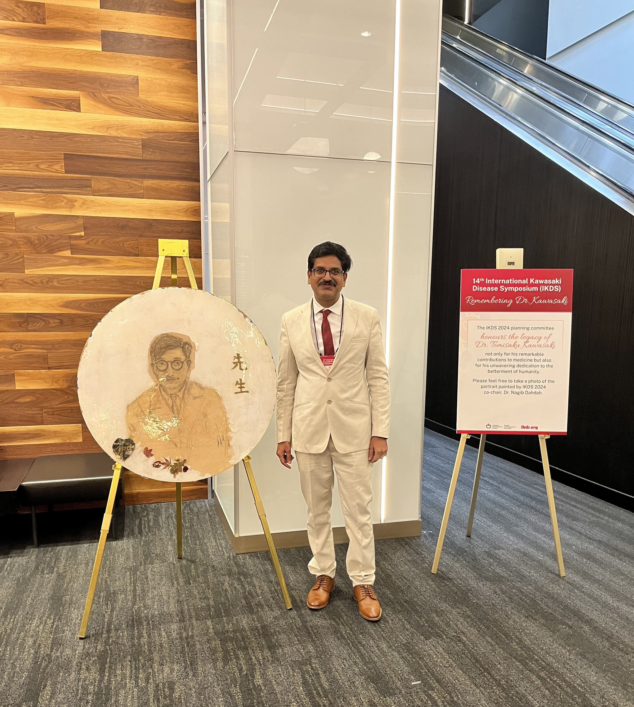
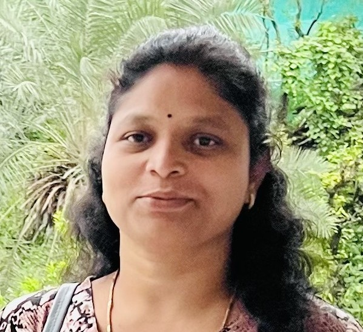
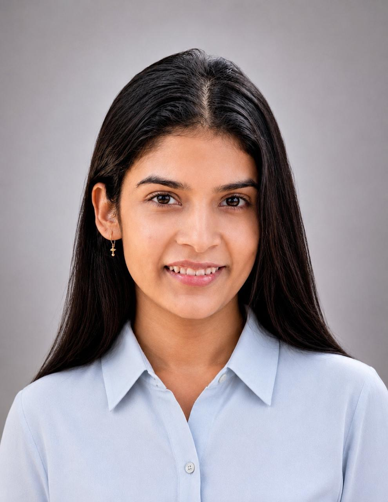
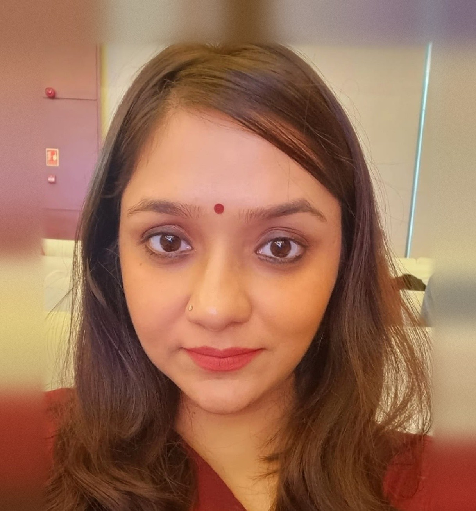
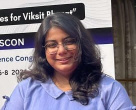
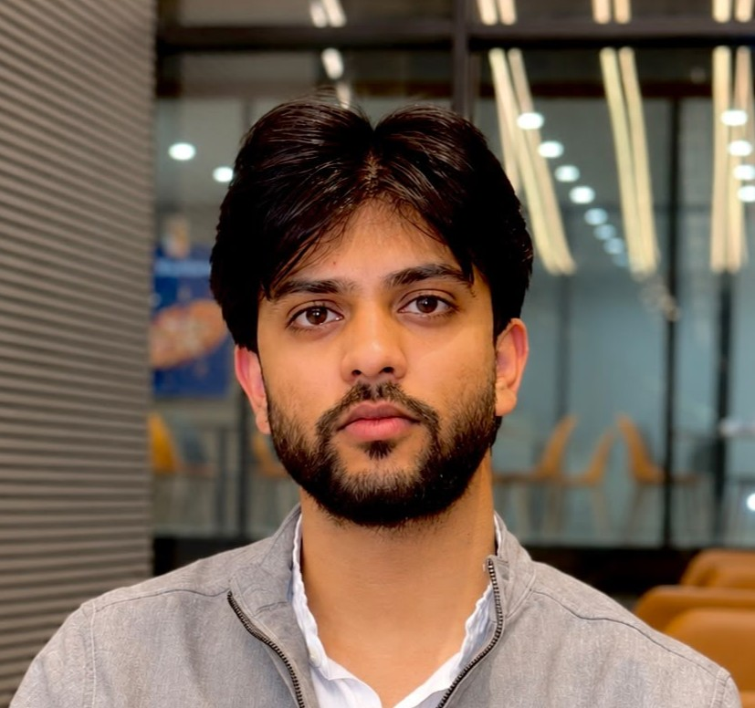

Recent Publications
About Dr Jayakanthan
Dr Jayakanthan is a full-time faculty member in the biochemistry unit of the Department of Pediatric Medicine at the Postgraduate Institute of Medical Education and Research (PGIMER), India. His responsibilities include teaching, diagnostic service and research. Current research interests include gut microbiome in healthy preterm infants and Necrotising Enterocolitis(NEC), immunopathogenesis and biomarker discovery of vasculitis including Kawasaki disease and Deficiency of adenosine deaminase 2 (DADA2). He has previously worked on research aspects of the pathogenesis of autoimmune disease, including Takayasu arteritis, Kawasaki Disease, Sjogren Syndrome, and Systemic lupus erythematosus (SLE); host-microbiome interactions; and biomarkers of latent Tuberculosis infection (LTBI).
Beyond his academic and research responsibilities, Dr Jayakanthan has demonstrated outstanding leadership as the chief guide for four MD postgraduate candidates in Paediatrics. His dedication to mentorship reflects his commitment to nurturing the next generation of medical professionals.

Our Collaborators
Meet the Team


Past Experience: ICMR First-in-World Challenge
My research focuses on integrating human and microbial genomics to investigate the underlying mechanisms of complex gastrointestinal, autoimmune, and metabolic diseases, including necrotizing enterocolitis (NEC), inflammatory bowel disease (IBD), Kawasaki disease (KD), and alkaptonuria (AKU).
Current - Temporal Multi‑Omics Study for Development of Trajectory Score for Neonatal Sepsis and AMR PredictionCurrently working as a Junior Research Fellow (JRF) in the Department of Paediatric Biochemistry, PGIMER, Chandigarh, with over 5 years of post-M.Sc. research experience across Molecular Biology, Immunology and Translational Biomedical Research. Research expertise encompasses biomarker discovery and validation, molecular diagnostics, genomics, transcriptomics and cellular immunophenotyping. Proficient in a range of advanced molecular and cellular techniques, including flow cytometry, fluorescence-activated cell sorting (FACS), PCR and real-time qPCR, DNA/RNA isolation, Sanger sequencing and next-generation sequencing (NGS)-based approaches.
Current - Multi-omics approach for development of biomarker signatures for predicting coronary artery lesions in atypical Kawasaki disease: A collaborative study from North and East India
My research background is in immunology, with a focus on host-pathogen interactions and immune responses during infectious diseases. During my doctoral research at Panjab University, I investigated the immunomodulatory potential of novel TLR7/8 agonists as vaccine adjuvants against Leishmania donovani, exploring their effects on innate and adaptive immune responses. My work involved immunological profiling, macrophage functional assays, cytokine analysis, oxidative and nitrosative stress assessment, gene expression studies, and flow cytometry. I have a broader interest in understanding host immune responses to infection and the molecular mechanisms that influence disease progression.
Current: ICMR First-in-World Challenge
I am a Post doctoral Research Scientist, with 8 years of experience in the field of neonatal thrombocytopenia and neonatal alloimmune thrombocytopenia, along with hands-on molecular biology, and immunohematology experience.
Current - Temporal Multi‑Omics Study for Development of Trajectory Score for Neonatal Sepsis and AMR Prediction
My research areas include multi-omics and transcriptomics, machine learning for disease prediction and biomarker discovery, molecular docking and drug target identification, viral genomics and microRNAs, knowledge graphs and large language models for biomedical data.
Current - Temporal Multi‑Omics Study for Development of Trajectory Score for Neonatal Sepsis and AMR Prediction
Contact & Join
We welcome collaborations, clinical partnerships, and exceptional researchers at all career stages who share a passion for understanding immune-mediated disease.
Open Positions
We are actively recruiting motivated individuals.
Please send a CV, brief research statement, and contact details for two referees to the email above. Informal enquiries are very welcome.